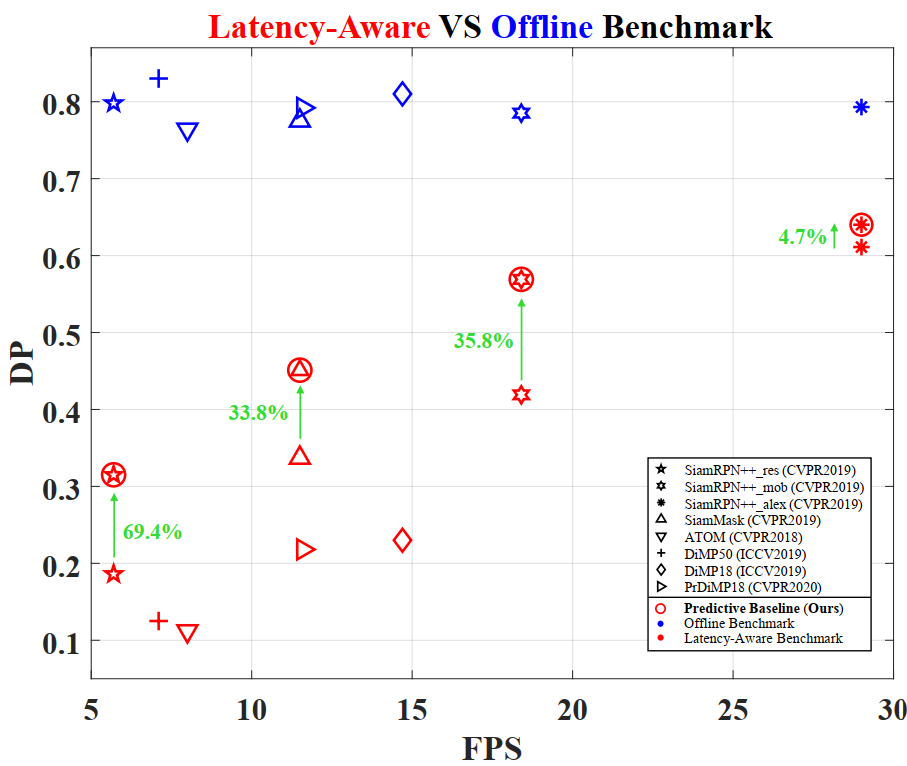

Predictive Visual Tracking
A New Benchmark and Baseline Approach
Bowen Li1*, Yiming Li2*, Junjie Ye1, Changhong Fu1, Hang Zhao3
1School of Mechanical Engineering, Tongji University
2Tandon School of Engineering, New York University
3Institute of Interdisciplinary Information Sciences, Tsinghua University

Abstract
As a crucial robotic perception capability, visual tracking has been intensively studied recently. In the real-world scenarios, the onboard processing time of the image streams inevitably leads to a discrepancy between the tracking results and the real-world states. However, existing visual tracking benchmarks commonly run the trackers offline and ignore such latency in the evaluation. In this work, we aim to deal with a more realistic problem of latency-aware tracking. The state-of-the-art trackers are evaluated in the aerial scenarios with new metrics jointly assessing the tracking accuracy and efficiency. Moreover, a new predictive visual tracking baseline is developed to compensate for the latency stemming from the onboard computation. Our latency-aware benchmark can provide a more realistic evaluation of the trackers for the robotic applications. Besides, exhaustive experiments have proven the effectiveness of the proposed predictive visual tracking baseline approach.
Examples of Tracking with Latency
Visualization of representative latency-aware tracking scenes. The red boxes denotes bare tracker (dashed line) and proposed predictive tracker (solid line). The green boxes indicates ground truth.
Results Comparison
Performance of state-of-the-art trackers on the proposed LAE benchmark. The curves in solid colors report the performance of the 8 benchmarked trackers on LAE, whereas the dotted curves overlaid in semi-transparent same colors outline the performance obtained by the same trackers on the traditional offline benchmark. In brackets, we report the distance precision (DP) and area under curve (AUC) on LAE (in black) and on offline benchmark (in gray). Clearly, many offline promising trackers fail to maintain their robustness and accuracy in LAE benchmark.
Predictive Visual Tracking Baseline
 Performance of the state-of-the-art trackers with offline latency-free and online latency-aware benchmarks on DTB70. The distance precision (DP) is employed for evaluation. The same shape indicates the same tracker, i.e., star for SiamRPN++ with ResNet50 as backbone. Blue denotes the results on the offline benchmark. Red means the results on the latency-aware benchmark. Our predictive tracking baseline is marked out by red circles, where the original performance is improved by a considerable margin, denoted by Green arrows and percentages.
Reference
@misc{li2021predictive,
title={Predictive Visual Tracking: A New Benchmark and Baseline Approach},
author={Bowen Li and Yiming Li and Junjie Ye and Changhong Fu and Hang Zhao},
year={2021},
eprint={2103.04508},
archivePrefix={arXiv},
primaryClass={cs.CV} }
Acknowledgements
We thank the contribution of SenseTime and Martin Danelljan et al. for their brilliant tracking libraries Pysot and Pytracking sincerely. We would also like to extend our gratitude to Martin Li et al., who firstly proposed the latency issue in perception tasks and inspired us.